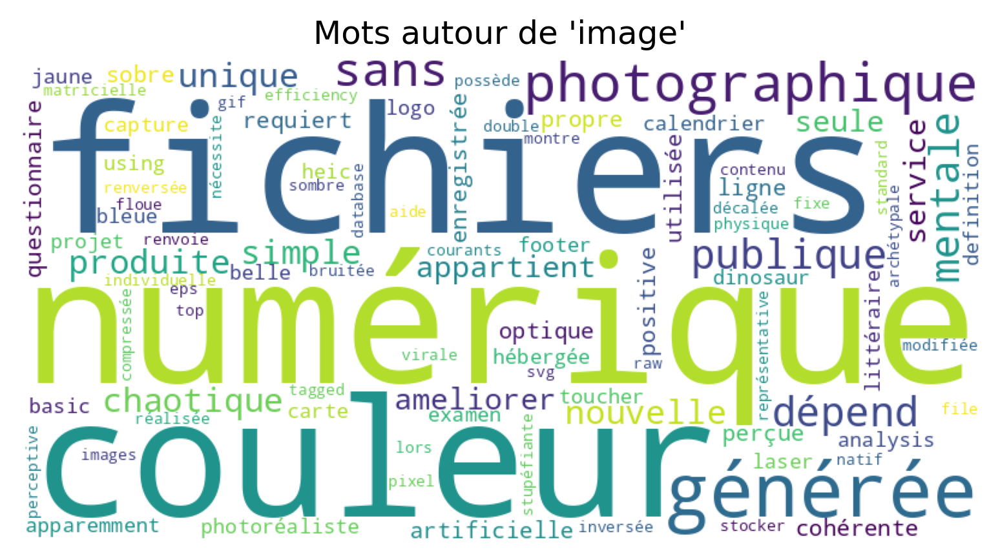
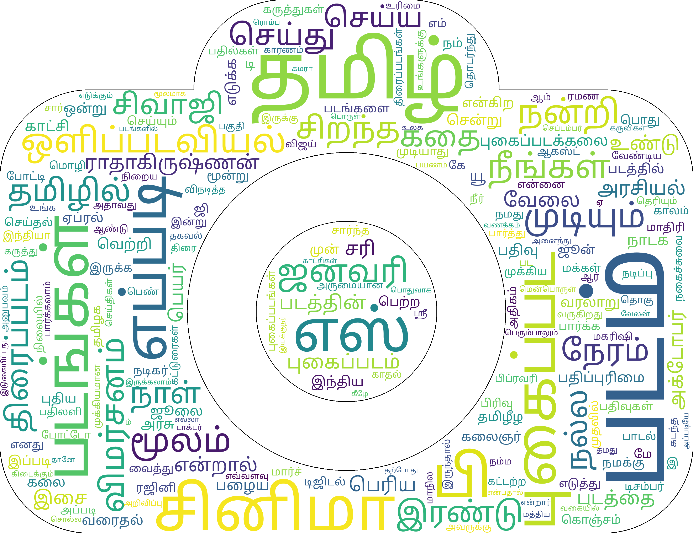
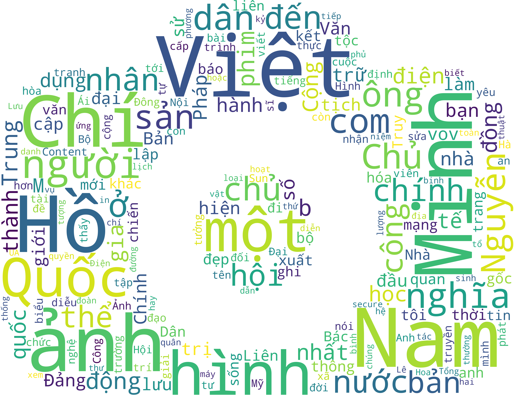

Définition :
- image, nom féminin
Une image est définie comme une représentation ou une reproduction de quelque chose ou d’un être visible.
Source : Dictionnaire de l'Académie
Quelques exemples selon les contextes extraits : l’image psychique
- une image fixe
- une image numérique
Au XIème siècle, le mot “image” était “imagene”, emprunté au latin “imaginem” et accusatif de “imago”. Il signifie : représentation, image, copie, comparaison.
Source : Dictionnaire de l'Académie
illustration, icône, reflet, apparence, incarnation, emblème, description, comparaison : ces synonymes sont proches du sens littéral.
réputation : est présenté comme synonyme de image de marque. Le sens renvoie à une représentation mentale, plus cognitive. sur le modèle de, à l’exemple de, à l’instar de : renvoient à quelque chose dont on se réfère.
Source : Dictionnaire de Le RObert

Définition :
Source https://en.bab.la/dictionary/tamil/படம்

Définition :
Source
Jetez un oeil à notre analyse si vous en voulez savoir !